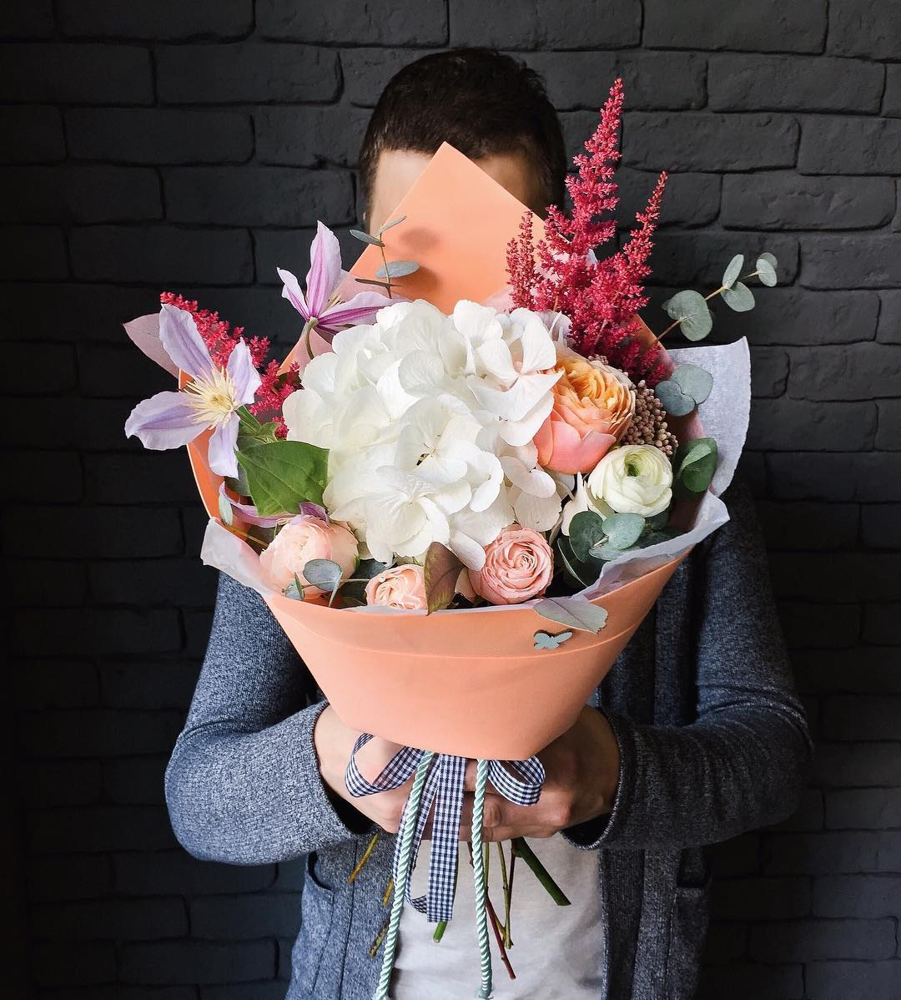
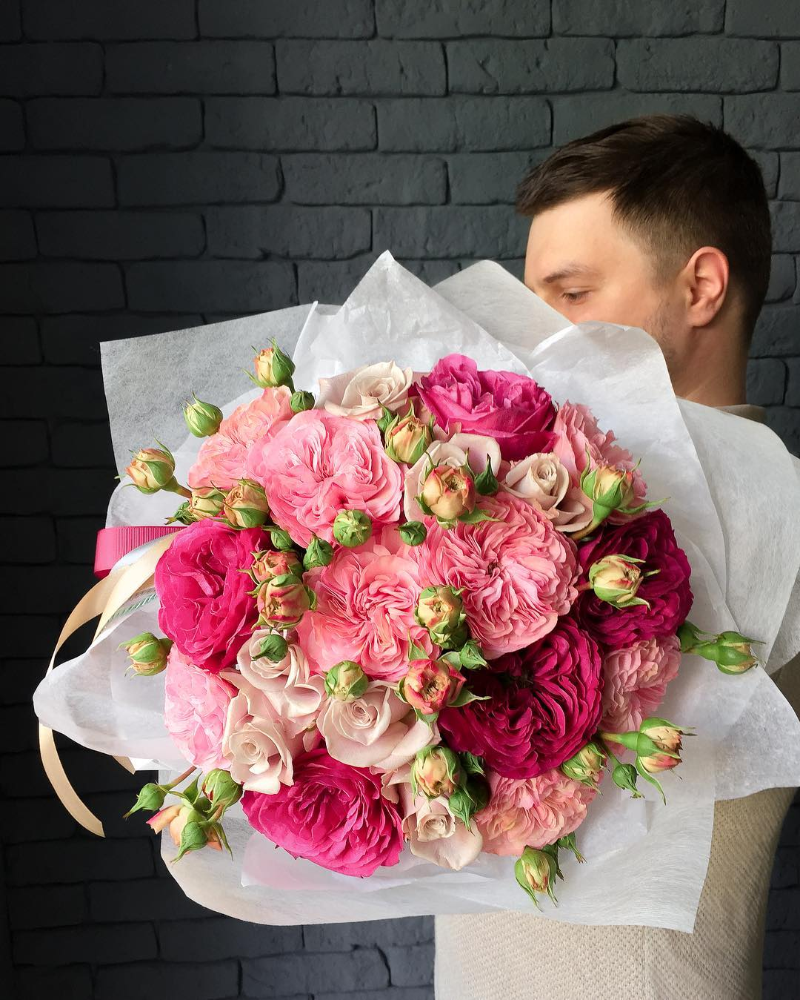

Букеты из свежих цветов на свадьбы и праздники
Делаем букеты которые долго стоят, потому что мы заботимся о цветах. Свежие цветы мы покупаем у поставщиков два раза в неделю. Перевозим и храним цветы в пластиковых, а не железных баках, чтобы ржавчина не вредила цветам. Каждый день подрезаем цветы, пользуемся только острым инструментом, чтобы срез не мешал цветку пить. Каждый день меняем и обеззараживаем воду, чтобы бактерии не портили цветы. Большие магазины не могут позволить себе тратить столько времени и сил на уход за цветами, поэтому наши букет стоят дольше.
Цветы для дней рождений, годовщин и популярных праздников
Мы делаем букеты, которые не повторяются. Мы можем составить букет с похожими цветами, упаковкой и лентами, но он не будет в точность повторять ваш пример. Так получается, потому что цветы живые и не похожи друг на друга — у них разные размеры и оттенки, их сезон может закончиться и их перестанут привозить к моменту вашего заказа. Цветы доставляют с аукционов и цена букета из одних и тех же цветов может различаться в два раза. На рынке постоянно появляются новые сорта, цвета и оттенки, которых не было раньше, что позволяет следовать за модой и делает прошлые букеты неактуальными.
35 рублей
50 рублей

100 рублей
150 рублей
Подарите цветочный ящик, если знаете что все придут на праздник с букетами
Ящики мы покупаем у ремесленников и раскрашиваем их вручную, поэтому каждый подарок будет уникальным
Кроме цветов, можем дополнить композиции зефиром ручной работы
Сделаем свадебный букет, который подчеркнет характер невесты и проживет целый день
Мы понимаем, сколько волнений переживает невеста при подготовке к свадьбе, и хотим, чтобы вопросы с букетом ее не беспокоили. Поэтому мы видим невесту всего два раза — при обсуждении букета и в момент его вручения.
Чтобы букет раскрыл образ невесты, мы подробно обсуждаем ее наряд и костюм жениха, узнаем подробности мероприятия и фиксируем ее пожелания.
Свадебный букет отличается от подарочного не только формой и составом, но требованиями к его стойкости.
Во время свадебного переполоха, никто не следит за тем, чтобы букет стоял в воде и не ограничивает время фотосессии, чтобы цветы могли пополнить запас влаги. Поэтому мы применяем специальные аксессуары и химию, которая позволяет цветам пережить свадебный день, не потеряв свою красоту.
Инструкция — как самостоятельно ухаживать за букетом
Чтобы букет радовал вас не только когда его подарили, но и потом мы прикладываем к нему пакетик кризала. Это средство помогает цветам жить дольше, но кроме подкормки, цветам нужен уход:
- Не держите букет без воды больше 25—30 минут,
- Не ставьте цветы под прямые солнечные лучи или возле теплой батареи
- каждый день меняйте воду и добавляйте немного кризала
- каждый день подрезайте стебли цветов под 45 градусов
- когда кризал закончится, продолжайте без него подрезать стебли и менять воду каждый день
Как заказать
Расскажите, какие предпочитаете цвета, форму букета, упаковку и ленты. Отметьте чего в букете быть не должно и что написать в записке. Сообщите куда и когда доставить и контактные данные.